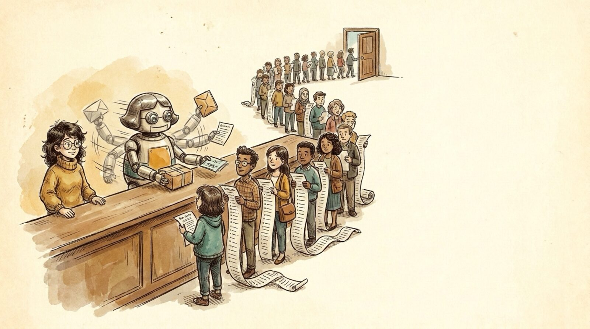

<section id="p10" data-transition="fade" style="background:#f5eee0">
  
  <h1 id="pb66b28a82689r0-96ef3955" style="position:absolute; top:291.55px; left:1238.95px; width:1920px; font-family:Arial, sans-serif; font-size:64px; font-weight:700; line-height:1.1; color:#222222">Engineering is still&nbsp;<br>the bottleneck</h1>
  <aside>Unchanged #1: even moving faster, there is ALWAYS more to do than capacity to do it. A very busy robot still faces a very long line.</aside>
</section>
